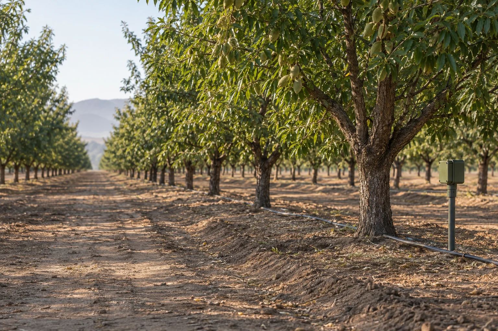
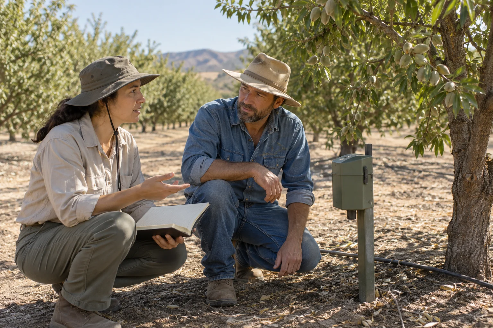

Field
coordinators
Organise site conversations, node registers and the agreed setup handover.
Verdant Row is a 23-person monitoring supplier for regional orchard growers and the agronomy partners they already work with.

We organise the node and gateway configuration, the field setup discussion and an initial review of data quality. That work needs a grower who owns the context and a named person who follows up the record.
Our primary field area is Fresno, Madera, Kings and Tulare counties. We work through scoped arrangements; neither a website selection nor a sample report confirms availability or coverage.
We focus on orchard monitoring. We do not operate irrigation systems, write agricultural prescriptions, provide insurance or promise yield and water savings.
Organise site conversations, node registers and the agreed setup handover.
Prepare equipment scope and review whether the received record is complete and identifiable.
Keep responsibilities, follow-up questions and review arrangements clear.
Coordinate the small supplier team and the agreed service arrangements.
All roles, people and company history are fictional. No real agronomist qualifications, certifications, installations or grower testimonials are claimed.

Our local planner asks only for broad choices: block count, connection, orchard type, role and region. It builds a preparation note you can inspect and download.
It sends no message and requests no farm coordinates, personal details or private operating data.
Example contact: field@verdantrow.example. No real office address or monitored inbox is provided.